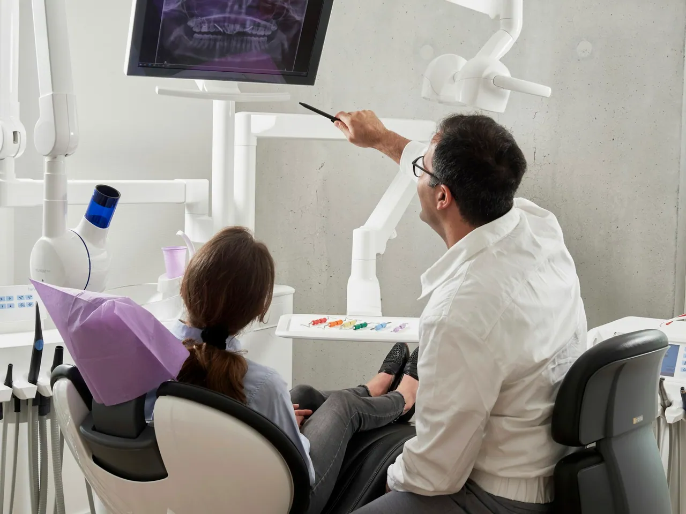
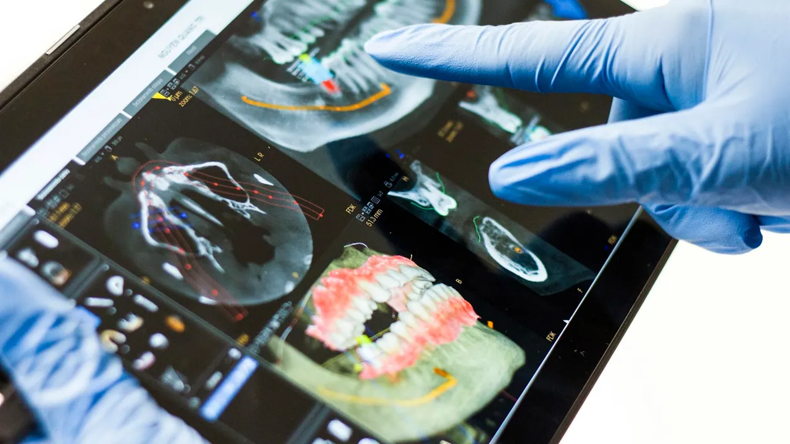

Medicina dentária em Guimarães
O seu sorriso, cuidado ao detalhe.
Na Alameda S. Dâmaso, reunimos uma equipa multidisciplinar, laboratório de prótese próprio e tecnologia de diagnóstico avançada — para lhe dar respostas rigorosas e sem esperas.

- ~20 anosde experiência em implantologia
- Laboratóriode prótese na própria clínica
- Top 5% PMEdistinção Scoring 2025
A nossa essência
Um legado de excelência no centro de Guimarães
Capacitar toda a estrutura com as melhores soluções técnicas e humanas, para prestar aos pacientes as melhores soluções em todas as áreas da medicina dentária.
Situados na icónica Alameda S. Dâmaso, temos laboratório de prótese interno — o que permite uma resposta mais breve e eficaz na reabilitação oral, seja com prótese fixa ou removível.
- Laboratório internoPróteses fixas e removíveis com prazos curtos e controlo de qualidade em cada etapa.
- Diagnóstico avançadoOrtopantomografia, telerradiografia e TAC no local, para planear com rigor.
- Acompanhamento dedicadoUma equipa multidisciplinar centrada no seu conforto em cada consulta.
O que fazemos
Especialidades
Todas as áreas da medicina dentária, num só lugar e com a mesma equipa a acompanhá-lo.
-
Implantologia
Dentes fixos sobre implantes.
-
Ortodontia
Aparelho fixo para alinhar o sorriso.
-
Alinhadores invisíveis
Correção discreta e removível.
-
Facetas dentárias
Estética natural em cerâmica.
-
Coroas e pontes
Reabilitação de dentes danificados.
-
Prótese dentária
Fixa ou removível, com laboratório próprio.
-
Branqueamento
Clareamento seguro e acompanhado.
-
Odontopediatria
Cuidados dentários para crianças.
-
Dentisteria estética
Restaurações discretas e duradouras.
-
Endodontia
Tratamento de canais radiculares.
-
Periodontologia
Saúde das gengivas e do osso de suporte.
-
Cirurgia oral
Extrações e pequenas cirurgias.
-
Higiene oral
Destartarização e prevenção.
-
Ortopantomografia
Radiografia panorâmica no local.
-
TAC e telerradiografia
Imagem 3D para planeamento rigoroso.
Especialidade de excelência
Implantologia com dentes fixos no próprio dia
Há cerca de 20 anos que colocamos dentes fixos sobre implantes. O planeamento digital, apoiado em TAC, permite-nos antecipar cada passo da cirurgia — com mais previsibilidade, menos tempo de cadeira e um resultado que acompanha a sua expressão natural.
- 0
- anos de experiência em implantologia
- 0
- implantes colocados
- 0
- para sair com dentes fixos

Quem o recebe
A nossa equipa
Médicos dentistas e assistentes que acompanham cada tratamento do início ao fim.
Estamos aqui para si
Contactos e localização
4810-286 Guimarães
Chamada para a rede fixa e móvel nacional.
1 hora de estacionamento grátis
No Centro Comercial S. Francisco, a cerca de 200 m — 2 minutos a pé da clínica.
Alameda S. Dâmaso 23, Guimarães
O mapa é fornecido pelo Google Maps. Ao carregá-lo, aceita que o Google possa recolher dados e instalar cookies no seu dispositivo.
Abrir direções numa nova janela